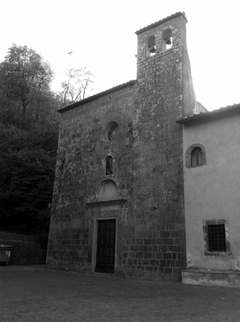

La cerimonia si terrà il 29/06/2013 alle ore 17 presso il Santuario della Madonna del Monte a Marta. Officeremo il matrimonio insieme a Don Roberto.
Dopo la cerimonia ci ritroveremo per festeggiare tutti insieme a Campolungo, luogo a noi molto caro, situato a nord del lago. Attenti a non perdervi! Seguite con attenzione le indicazioni della cartina o la macchina davanti (sempre che conosca la strada!) Il trucco e' vedere sempre il lago alla vostra destra.
Al fine di aiutarvi nella ricerca di un alloggio comodo e confortevole abbiamo scelto per voi alcuni agriturismi vicini al luogo della festa, anche per favorire un sicuro rientro nella notte, che senza dubbio avverrà in assoluta sobrietà, almeno per alcuni! Non abbiamo dubbi che apprezzerete le sconosciute bellezze della Tuscia!
Abbiamo aperto un conto per il viaggio (Provenza e Costa Azzurra) presso la Cassa di Risparmio di Ravenna, Sede Centrale. Il numero di conto è il seguente: IT95W0627013100CC0000137426. Ed è intestato a Vitali Francesca e Cordelli Duccio Maria. In alternativa abbiamo fatto una lista presso un negozio di Bologna che si chiama Cervellati (www.cervellatishop.com), in via Santo Stefano 29, tel 051/224931.